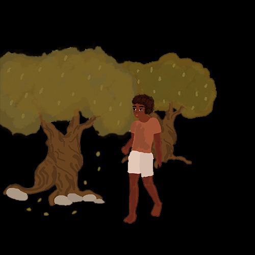

He was on his way from boarding school, waltzing from the insufficiency that had arisen in him, like cantaloupe on a vine that never turned ripe. This time, he would go far, where no one could ever find him, mainly because no one would ever look. The other boys in his class had grown with favor, ascending from prairies into mountains peaked of purpose and desire, but for him it hadn’t been the same. His father had sent him to the school many years ago, in hopes to mold him into a man, to follow his shoes and take the family business. The school drowned him in science and philosophy and law, but the boy would spend his late nights sculpting ornate model airplanes to sell from his dorm room. This upset his father, who remained blind to the boy’s fine craftsmanship and extraordinare. But the boy had long stopped paying attention to what others said, he didn’t care about approval, in fact he didn’t want it at all. Ever since the boy was young, he had never understood the words of others, for they were always plagued with expectation. He would memorize their words until they became innate, in a much robotic way, and he could no longer feel their effects. Actually, the boy couldn’t feel anything, not any longer. All he could do was look in the mirror, and cry at what he saw. It dawned on him, the disappointment, when he didn’t play along. And soon he replaced his feelings with performance, in the way they wanted him to be, as if he were a puppet on strings. Like a wild card masquerading among the deck, or a quarter moon trying to escape the darkness. But that was never who the boy was.

He waddled in the woods at the approach of dusk, another long repetitive day unidentifiable from any other day of his life. His knees ached, and he could feel each ligament as it moved. His arms scraped up from lacrosse practice, his muscles stretched and defined like a statue chiseled in stone. The light of the trees poured in on him, and the wind blew, dropping berries on his curly head. Eventually he had gotten far from his school in the woods, to virgin grounds he’d never seen, and he began to approach the nearest town. He looked down from the cliff, peering off the edge, and out in the crevice of the street was a creature, unlike anything he’d ever seen, and as he looked at it, something ignited inside him, the first feeling he’d ever admit to embrace: recognition.
She awoke among the stalks, the first time she’d ever been composed. She lay buried among a field of corn, basking in a small grove where the light seeped through the shadows. She sat up rubbing her temple, and she knew not of life, nor of its sensations. And so, she felt it at once. She looked down at her feet with curiosity, wiggling her toes. She rubbed her face, her hair, examining every bit. She grabbed her breasts, poked the bones on her shoulders, the edging of her ribs. The girl fluttered her wings, fluttering them at various speeds, fluttering them in a supersonic beat. She felt absolute and she smiled, drowning in the persistence of herself. As she stood, she lost her bearings, falling like a deer, but caught on quickly. She could walk and her entire entity moved along wherever she led it, she could jump, and stand on her hands, yet she didn’t quite feel cohesive. She knew not of language, nor could she speak.
Quickly, she was overtaken by a cavernous hunger, and with instinct, grabbed at the stalks and indulged until it felt heavy in her stomach. She then began to run in her satisfaction, she ran and the sun filled her up with warmth. She tried to chase the sun, she wanted to find where it began. She ran through the paths of corn, until they unwound into a forest, in which she skittered through the trees. She headed toward the golden rays, but they kept moving, and she was lost in it. She hopped from stump to stump, and splashed through the shallow waters that made a trickling noise, and she stopped to drink. She ran through fields of sunflowers, and tall white trees of birch, through vineyards and olive groves, and daisies, twirling past the waterfall that sprayed water at her in a rainbow stream of light, and past the old ruins where men shot archery at the moon. None of which she knew by name, but by how it felt, how it smelled, how it tasted in her tongue, rather cottony.
But soon the sun began to fade away and had almost fallen when she came upon a town, falling right over the cobblestones and into a crowd of a long days work. The crowd looked at her astounded, caving in. The children stopped playing, the donkeys sighed in relief, and the vendors all came to take a look, at the beautiful girl of umber, with the wings of a pachliopta, bolted into her back.
The boy watched the girl squirm in their arms. Kicking and fighting and biting, as she tried to flutter away. He watched as they locked her in a cage and took her away. He watched the big eyes of the people, the intrigue in their faces, the fear in their expressions. And he followed her. He followed the wagon in which she rode up to the old tent, where she was unleashed. Into the circus. For two weeks he watched her in fascination, with an inward disgust of himself, hidden behind a trailer that faced her cage.
She wasn’t alone, there were others in the cage, lions, and tigers, and grizzlies, sheep even, and cattle. And at some point each day, a line of acrobats and clowns gathered around the cage, unlocking it and gathering the animals too. She was covered in makeup, and paintings, and gemstones, and they’d send her into the arena, where she would fly. And if she didn’t go too high, he’d watch her as she cried on the ground, clutching her knees from the whip lashing at her back. The boy watched in disgust, the disgust was of himself. There was something about her that felt right, and he wanted her.
On one cold night, she lay among the hay, with the cats who had taken her as kin, and she ate from a jar of peanuts, sparing a few to the elephants through the bars. The boy moved from behind the trailer, walking right up and grabbing onto the cage. She didn’t notice him nor show symptoms of his presence, and so he called to her, giving her the name from the label in which she ate.“Hey” he said, “Poppy”, startling the peanuts from her hands. She backed away, and all the creatures snared forward to him. The boy then reached into his pocket, revealing the key he had stolen from beneath the polka dot jumper slung over the dressing room chair, and he unlocked the cage just for her, and all of the bodies came running out with a roar.
He grabbed her hand and pulled her, and she pulled away, but he was much stronger, much more alive. They ran out of the big striped tent, into the parking lot as she fought against him, as he threw her into a random car out beneath the sycamore tree. He fumbled around to start the engine, and sped away, before anyone noticed she had been kidnapped, before anyone noticed they were gone, where no one could ever find them.